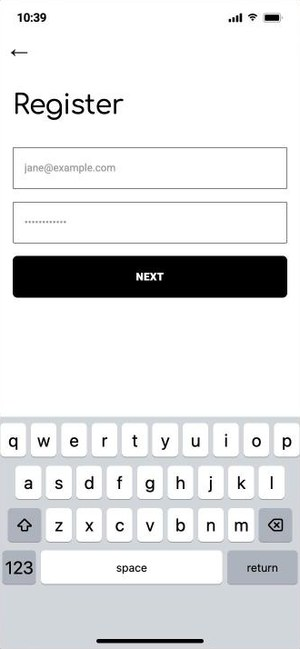
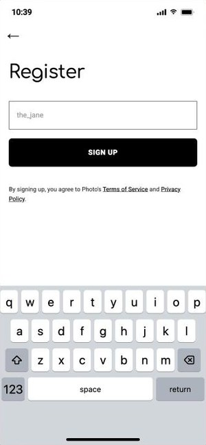

Lesson 3 · Funnels and drop-off
A funnel follows people through the steps of a task, and shows where they stop.
A simple question
1,000
visits to the start screen, and 120 new accounts. So 88% of visitors gave up on signing up?
Write down what's wrong with that before the next slide.
A funnel, drawn
Each bar is the people who reached that step. The number after the dot is the share of the step before: the biggest loss here is between product page and cart.
Funnels are everywhere
Opened the ad → started the form → uploaded a CV → submitted
Opened a restaurant → added a dish → entered the address → ordered
Saw the sign-up box → typed an email → confirmed by email
Enrolled → watched lesson 1 → handed in the first task → finished
Mixpanel, Google Analytics and every product team draw them. The questions are always the same: who counts at the top, what counts as reaching a step, and where do people stop?
Reading a funnel
The step with the lowest % of the step before is where to look first.
Too long a form? A broken button? Just browsing? The funnel can't say. Screens, taps and time can (later lessons).
Who is at the top, what "reached" means, visits or people. Change one, and every percentage moves.
Now, our app
The same funnel idea, on the app your data comes from: its screens, and how the data records each step.
Our app · the screens


Each move is a row in selections: the screen you leave (step), the screen you go to (value).
Our app · the funnel in numbers
| Step | Reached it | % of the step before | % of the start |
|---|---|---|---|
| Chose Register | 200 | 100% | |
| Email and password done | 150 | 75% | 75% |
| Username done (in the app) | 120 | 80% | 60% |
% of the step before shows where people give up. % of the start shows how many make it all the way. (Made-up numbers: yours come from your own data.)
Where does the funnel start?
everyone
they have an account: never registering
the registration funnel starts here
Start the funnel at 300 and the first step "loses" 60% of people. Most of them were never registering. Back to Stride: its 12% hid the same mistake.
Count visits, not clicks
| step | value | |
|---|---|---|
| start | register_email | |
| register_email | register_username | 1st |
| register_username | back | |
| register_email | register_username | 2nd |
| register_username | discover |
One visit, two choices into the username screen. Count rows and this visit reaches it twice. Count visits that have the choice, and it's once.
Visits or people?
Monday's visit stops at email and password: a loss. Tuesday's visit signs up: a success. One of two visits made it.
The same browser chose Register, and got in: a success. It just took two visits.
Both are true. They answer different questions: how well does one visit go? and how many people make it in the end?
Principle · Where does it start?
A funnel's drop-off is only as honest as its first step.
Start it with people who were never on the path, and every step looks worse than it is. Decide who belongs at the top, and say it next to the funnel.
Your guided walkthrough
The practice data has traps in it. The questions know where. They won't tell you.
Lesson 3 · Summary
What you learnt
Your self-study